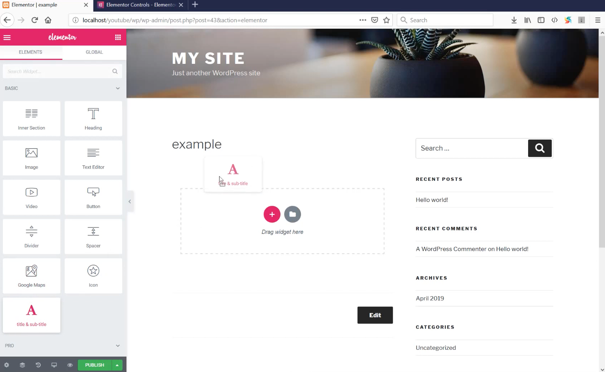
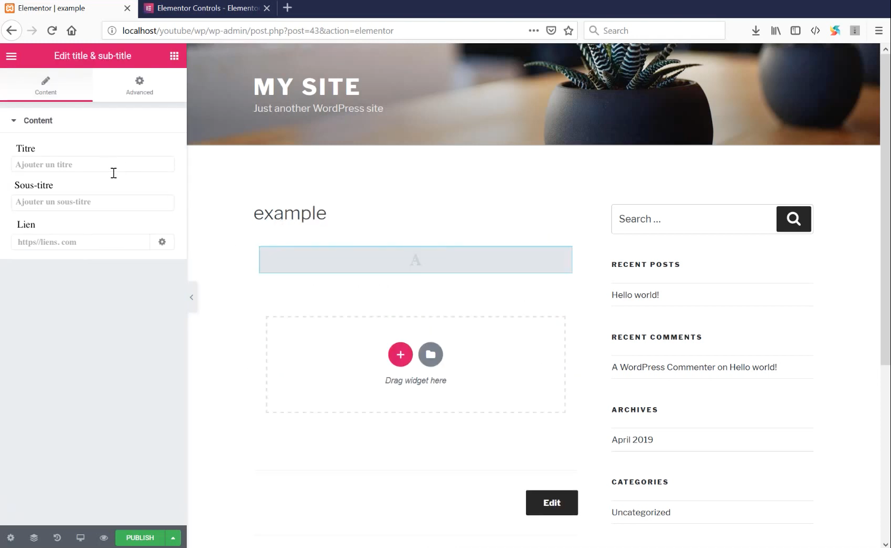
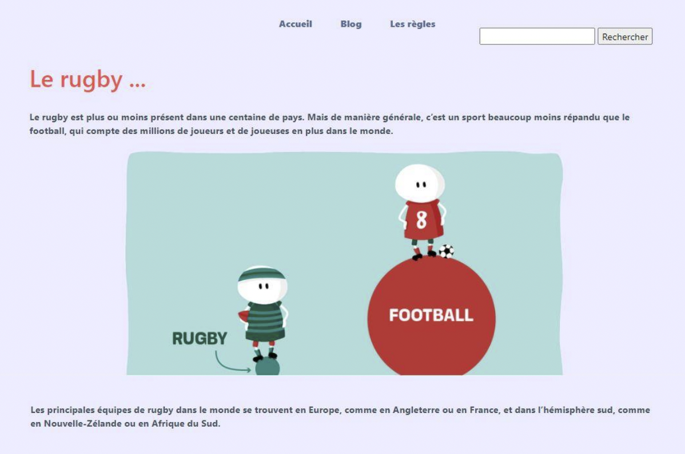
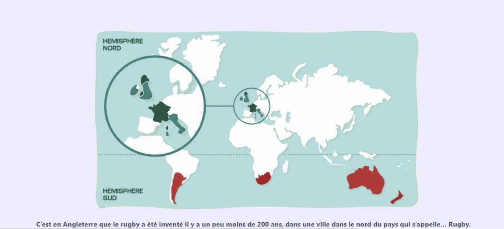
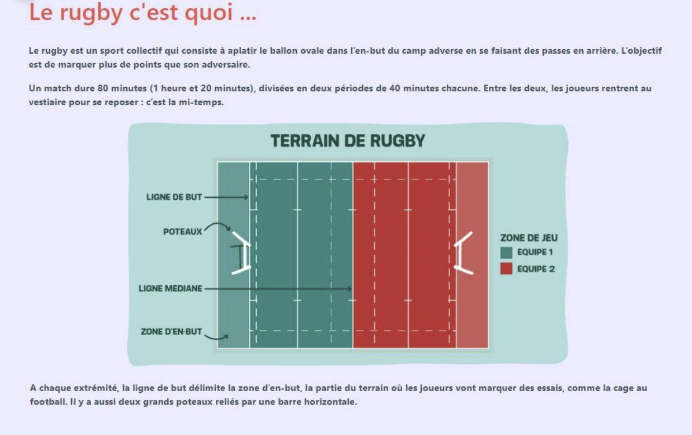
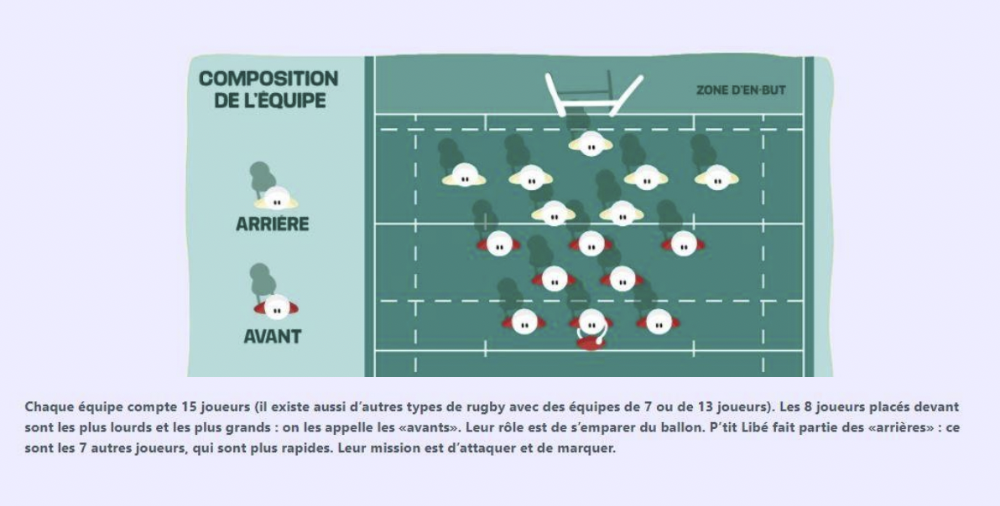

Stage : MentalWorks 2021
Déroulement du stage :
Ce stage se déroule lors de la première année du BTS SIO et dure 4 semaines. Les dates du stage étaient les suivantes : du 31 mai au 25 juin 2021. Enfin mon stage s'est déroulé dans l'entreprise MentalWorks à La Croix-Saint-Ouen.
Description du stage :
Durant ce stage, j'ai effectué deux mission orientée développement informatique :
- La fabrication d’un composant Elementor ;
- La création d’un thème Wordpress sur mesure.
Rapport de stage






Environnement
Voici les différents logiciels utilisées :
- Visual Studio Code
- WordPress avec l'extension Elementor
Compétences associées
Organiser son développement professionnel :
- Mettre en place son environnement d’apprentissage personnel
- Développer son projet professionnel